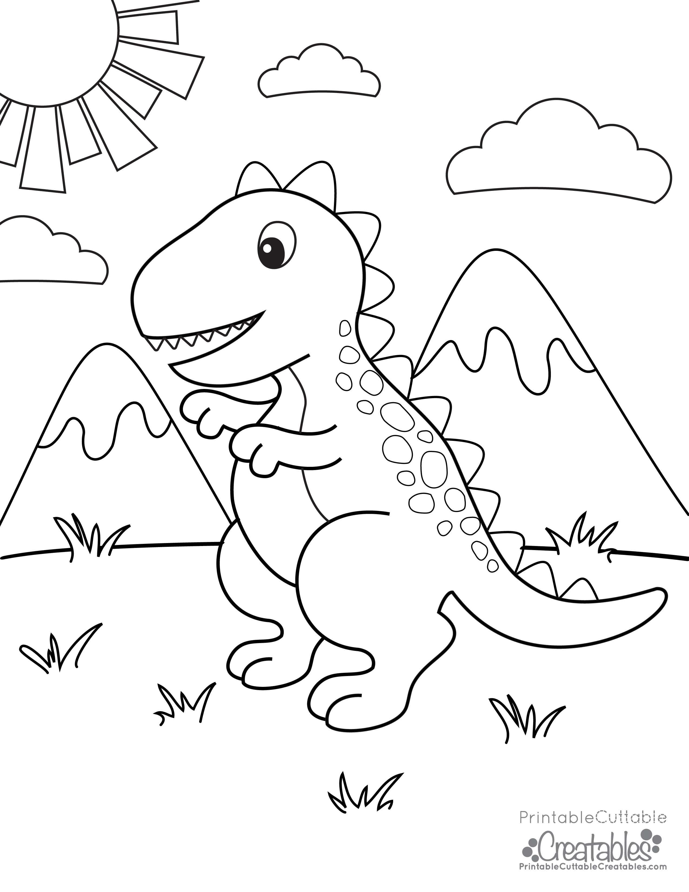

1. Sliko shrani v svojo mapo na računalniku
2. Sliko odpri s programo za urejanje slik (slikar)
3. Sliko pobarvaj s primernimi barvami, desno zgoraj zapiši ime dinozavra, ki si ga sam izbereš
4. Pobarvano sliko shrani v svojo mapo na računalniku
5. Odpri word in zapiši naslov Zgodba o dinozavru
6. kopiraj spodnji tekst in prazna mesta vpiši ime dinozavra.
Ko se je majhen dinozaver po imenu _____ en dan sprehajal po gozdu, je nenadoma zaslišal čuden hrup.
Sledil je glasu in prišel do jame. V jami je naletel na skupino majhnih, smešno izgledajočih dinozavrov, ki so se valjali po tleh.
Bili so majhni udarjalniki, znani po svojih trdih glavah, vendar so tokrat uporabljali svoje glave za nekaj povsem drugega.
Postavili so se v vrsto in začeli tekati naravnost drug proti drugemu, nato pa so se z vso silo butnili s čelom.
_____ je obstal z odprtimi očmi, ko je videl, kako so se udarjalniki odbili v zrak in se vrteli v smešnih krogih.
_____ se jim je pridružil in kmalu so vsi skupaj tekmovali, kdo bo naredil najbolj smešno vrtenje.
Padali so po tleh, vrteli so se v zraku in se nato z glavami odbili v drevo, da so ga zazibali. Bilo je smešno in zabavno.
Ko je sonce zašlo in so se naveličali zabave, so se vsi skupaj odpravili na travnik, kjer so se skupaj valjali po tleh in se smejali.
_____ je ugotovil, da so udarjalniki res čudoviti in zabavni prijatelji.
To nenavadno srečanje je postalo _____ najlepši spomin, in vsakič, ko se je počutil osamljenega ali potreboval smeh, je pomislil na tisti smešni dan, ko je našel nove prijatelje udarjalnike.
7. Shrani dokument z imenom dinozaver.doc
8. Nariši kako si predstavljaš dinozavra udarjalnika